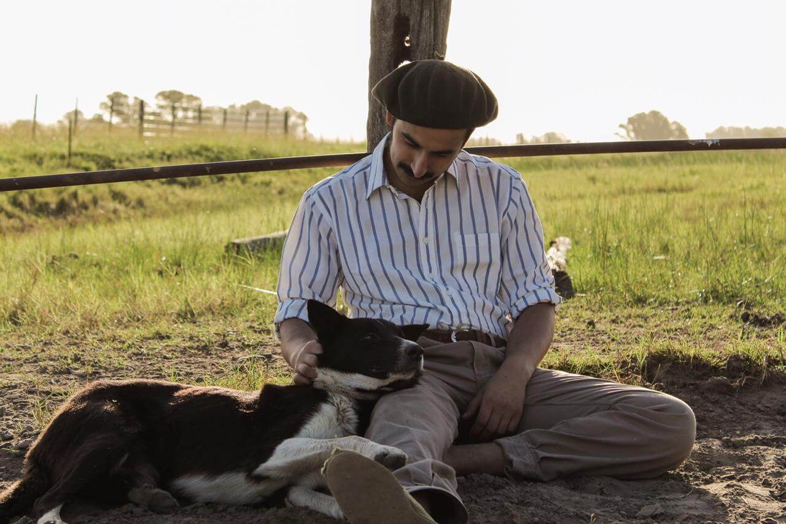

Llegué a este mundo en 1992; me crié en el campo, en General Alvear, pueblo muy tranquilo en el centro de la provincia de Buenos Aires, donde todos nos conocemos y la mayor parte de la economía proviene de la producción del campo.
Desde muy chico me atrajo la fotografía pero para esa época los celulares aún no existían y las cámaras eran poco accesibles.
Cursé la primaria en una escuelita rural en la que solo éramos 11 alumnos y, la secundaria en la Escuela Agrotécnica Salesiana de Del Valle. Al egresar de la misma me mudé a la ciudad de La Plata a estudiar para Ingeniero Agrónomo.
Instalado en La Plata noté que quien vive en la vorágine de la ciudad desconoce gran parte de la vida y el trabajo en el campo. Así fue que aproveché él auge de las redes sociales y mi gusto por la fotografía para tratar de plasmar la vida de la gente de campo, sus trabajos, sus formas de vivir y su día a día mediante fotos.
No contaba con una cámara razón por la cual el celular fue siempre mi gran aliado, aunque no descartaba la posibilidad de pasarme a ella en un futuro. Si bien sabía que una cámara mejoraría notablemente la calidad de las imágenes , al cabo de un tiempo dejo de ser una opción ya que mis fotos siempre fueron espontáneas y sacadas durante mis jornadas de trabajo en el campo.